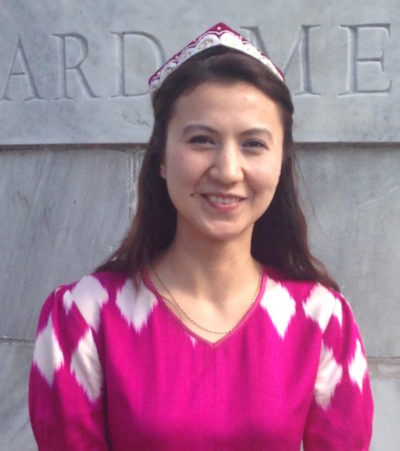
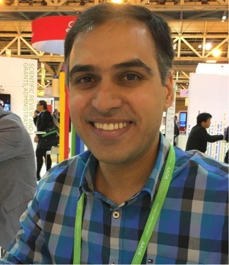
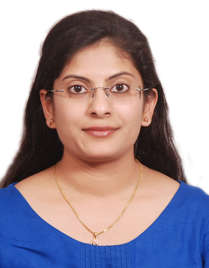
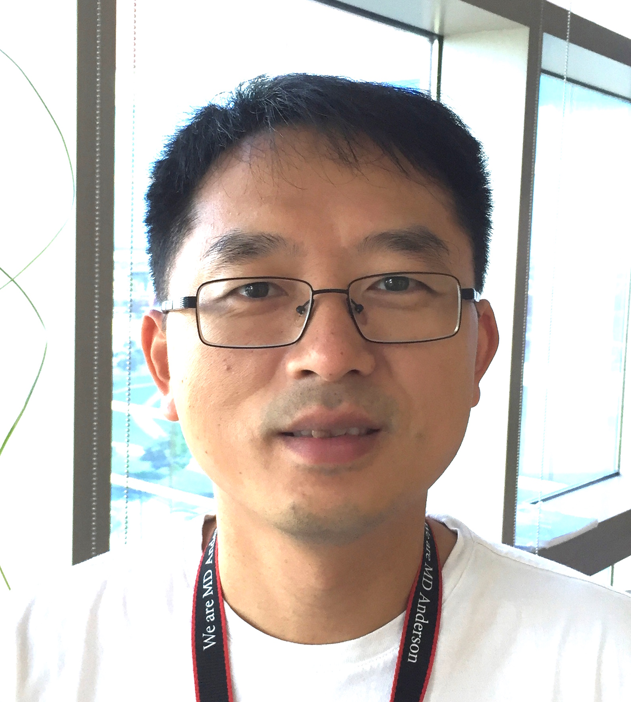
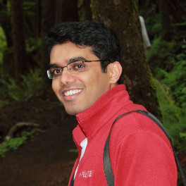
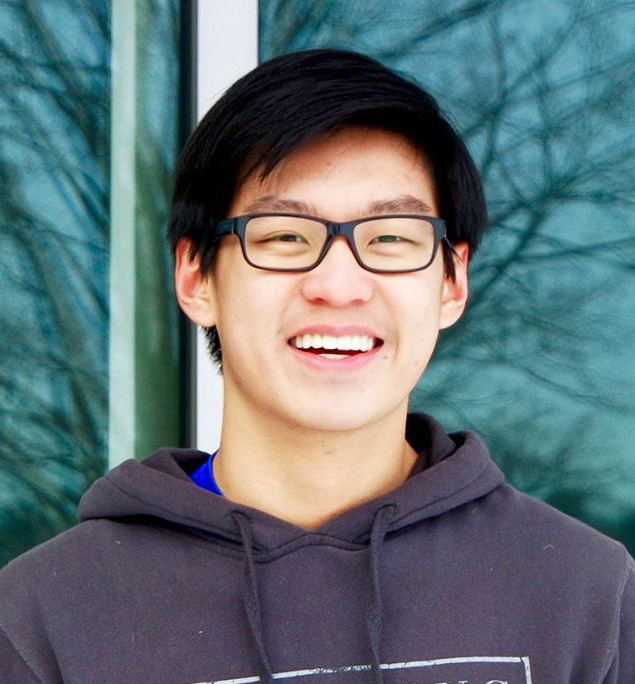
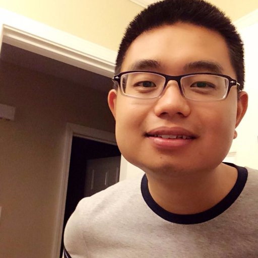
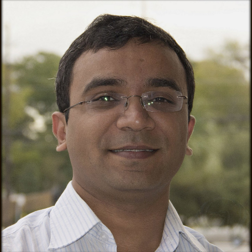

People
Principal Investigator
Kunal Rai, PhDAssistant Professor Department of Genomic Medicine |
Postdoctoral Fellows
|  | Mayinuer Maitituoheti, MD, PhD(alternative spelling: Mahinur Mattohti)I joined the Wall Lab at Harvard Medical School on 2011 as a visiting scholar when I was pursuing my PhD in HUST, China. After finished my PhD, I started my postdoc research at Harvard and investigated cancer genomics research, with a focus on the clinical impact of whole-genomic data in personalized medicine and genomic pathology. At the Rai lab, I engaged in the cancer epigenomics research which focused on understanding the role of epigenome in cancer progression and epigenetic basis for immunotherapy responses. My research goal is to develop systematic approaches to discover and characterize genomic and epigenetic changes that program cancer development in order to derive a deeper understanding of the molecular networks that lead to malignant transformation and to drive the translation of these findings into clinically useful therapeutics. |
| Photo | Christopher Terranova, PhDDescription |
|  | Elias Orouji, MD, PhDI am a physician and genomic medicine cancer specialist, currently working as a postdoctoral fellow at the University of Texas MD Anderson Cancer Center. I am a graduate of Heidelberg University, Germany and a member of American Society of Clinical Oncology. My research interests include genomic/epigenomic regulations in different types of cancer, targeted therapies and application of precision medicine in the treatment of cancer. |
|  | Veena Kochat, PhDWe are currently examining the various epigenomic factors that drive the transformation of neurofibroma to malignant peripheral nerve sheath tumor in Type I neurofibromatosis patients by high throughput sequencing studies. We are interested in exploring the non-canonical PRC2-independent role of EZH2 in activating oncogenic signaling pathways in MPNST. Our study aims to develop a combinational therapeutic approach involving epigenetic inhibitors and non-canonical EZH2-mediated signaling pathway inhibitors for MPNST patient cohorts. |
|  | Zhiyi Liu, PhDI focused on identifying the epigenetic drivers of the tumorigenesis of head and neck squamous cell carcinomas (HNSCCs). The genetic alterations of the TP53 gene (encoding p53 the "genome guardian") play the most important role in the malignant transformation of the head and neck squamous cells. A majority of HNSCC tumors (80%) has mutated TP53. Understanding the epigenetic regulations in the contexts of different types of TP53 mutations in HNSCC tumors will help us to identify novel therapeutic targets for anticancer treatment against HNSCCs. |
Research Assistants
| Photo | Mayura DhamdhereLab Manager |
Graduate Students
|  | Ayush RamanBaylor College of Medicine and MD Anderson Cancer Center |
Summer Students
|  | James JusufHigh School StudentI am examining the functions of CTCF sites and topological domain boundaries in regulating the expression of LARGE in melanoma. I am also testing the effectiveness of targeting CRISPR Cas9-mediated silencing mechanisms to enhancer and promoter regions of genes with copy number amplifications in lung cancer cell lines. |
Collaborators
|  | Ming Tommy Tang, PhDComputational BiologistVerhaak Lab Webpage |
|  | Samir B. Amin, MBBSComputational BiologistVerhaak Lab Webpage |